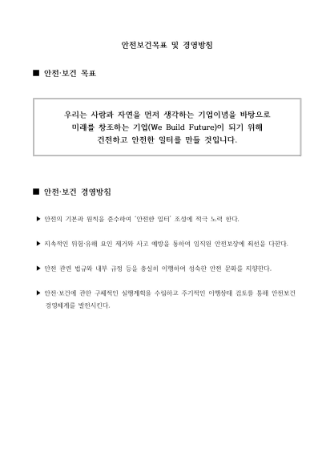

안전보건목표 및 경영방침을 준수하여 안전한 일터 조성에 적극적으로 노력하고 있습니다.

안전보건목표 및 경영방침
·
한국콘크리트산업은 사람과 자연을 먼저 생각하는
기업이념을 담아 고객에게 풍요로운 삶을 제공합니다.
안전보건목표 및 경영방침을 준수하여 안전한 일터 조성에 적극적으로 노력하고 있습니다.
레미콘을 자가 생산하는 시설로서 빠른 시간 이내에 타설할 수 있다는 장점이 있습니다.
아침조회는 07시 50분에 전 근로자가 실시하며 현재는 코로나19로 인해 시행하지 않고 있습니다(괴산 2단계). 아침조회 시 안전모 안전화 각반안전 그네 등 보호구를 확인 후 각 라인별로 TBM(Tol Box Meeting)을 통해 아침 위험요인을 확인합니다. 각라인별로 [ 반장 = 빨간색 / 철근반 = 파란색 / 출하 인원 = 빨간색 보수반 = 초록색 / 몰드반 = 흰색 / 생산반 = 노랑색]으로 나누어 이름을 부착 후 사용하고있습니다.

롱 라인 4 +숏 라인 3 + 단독 2를 포함하여 총 9개가 존재하며 1번, 2번 처럼 인장기 내부 강선이 터질 것을 방지하기 위해 안전장치를사용하였습니다. 5번 사진처럼 폴리 카보네이트와 EX 메탈을 사용하여강선이 터질 시 근로자에게 피해가 가지 않도록 안전조치를 하였습니다. 6번과 같이 인장 중에는 사이렌을 사용하여 근처 근로자들이 피신할 수있도록 조치를 취하고 있습니다.
법정의무사항인 정기 안전교육과 특별안전교육을 실시하고 있습니다. 정기 안전교육은 달에 한 번씩 의무적으로 근로자에게 실행하고 있으며특별안전교육은 보일러, 1톤 이상의 크레인, 지게차, MSDS를 사용하는인원, 페이로더, 등등 해당 근로자가 교체 시 다시 한번 교육합니다.
당 공장 지게차 총 3대가 존재합니다. 16톤 8톤 5톤 지게차가 존재하며 후방카메라 및 근로자 인식 벨 소리를설치 하여 지게차 후진 시 소리가 날 수 있도록 안전조치하였습니다.
협의체 회의는 한 달에 한 번씩 진행하는 안전 회의이며 당 공장에 위험요인이나 근로자 작업환경에 대한 조치나 개선점들을 회의합니다.